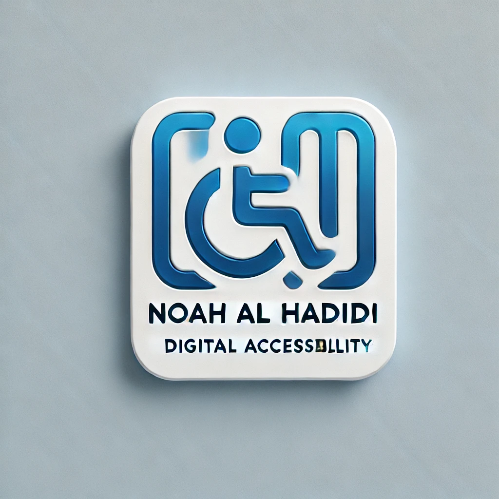

<header>
    <a href="#main-content" class="skip-link">Skip to Main Content</a>
    <button id="dark-mode-toggle" onclick="toggleDarkMode()">Toggle Dark/Light Mode</button>
    
    <!-- Language Switcher in Its Own ARIA Region -->
    <nav aria-label="Language Selection">
        <ul>
            <li><a href="index.html" lang="en">English</a></li>
            <li><a href="index-ar.html" lang="ar">العربية</a></li>
        </ul>
    </nav>
        <!-- Main Navigation -->
    <nav aria-label="Main Navigation">
        <ul>
            <li><a href="about.html">About Me</a></li>
            <li><a href="certificates.html">Certifications</a></li>
            <li><a href="audits.html">Accessibility Audits</a></li>
            <li><a href="media.html">Media & Recognition</a></li>
            <li><a href="contact.html">Contact</a></li>
        <li><a href="blog.html">Blog</a></li>
            <li><a href="https://www.linkedin.com/in/noahalhadidi" target="_blank">LinkedIn</a></li>
        </ul>
    </nav>
</header>
